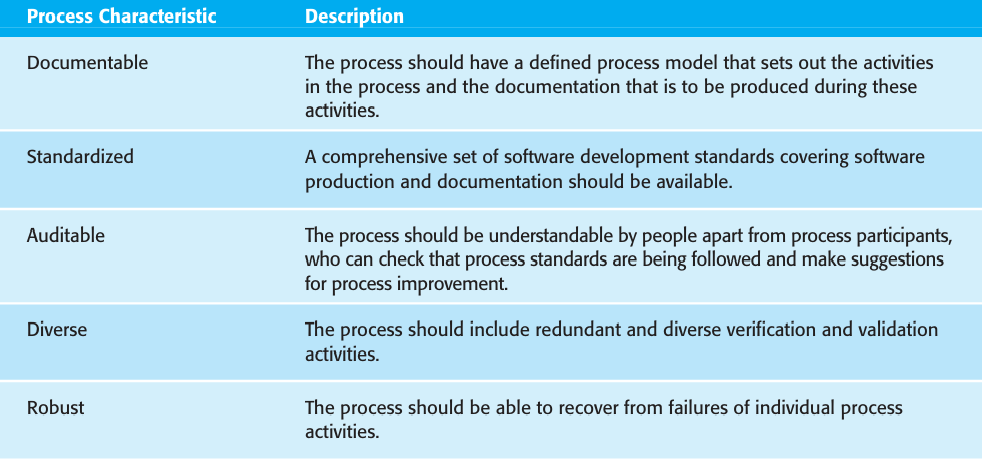
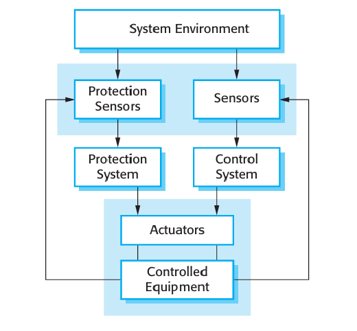
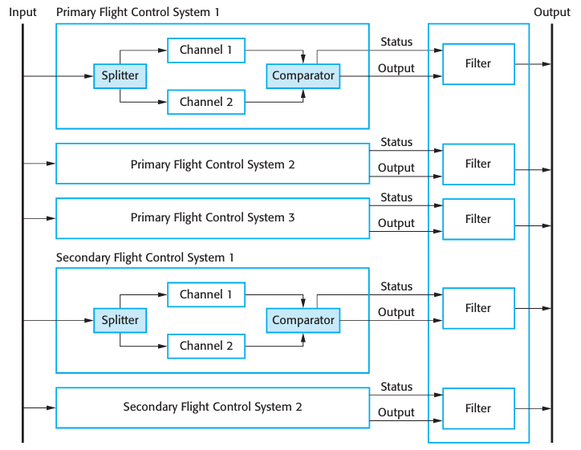
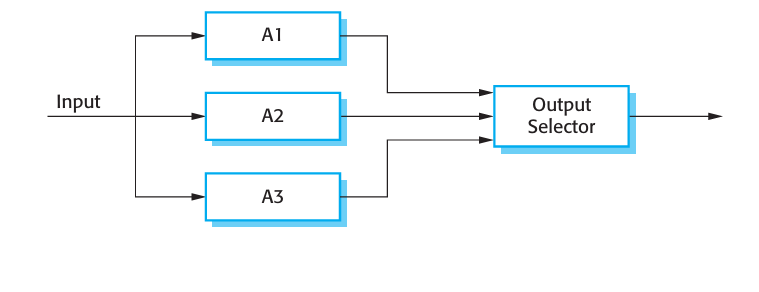
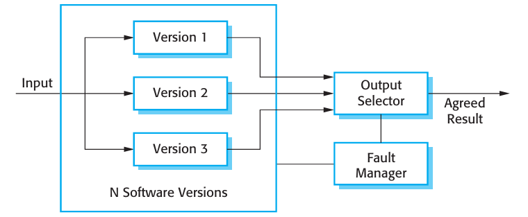

Objectives
The objective of this chapter is to discuss processes and techniques for developing highly dependable systems. When you have read this chapter you will:
- understand how system dependability can be achieved by using redundant and diverse components;
- know how dependable software processes contribute to the development of dependable software;
- understand how different architectural styles may be used to implement software redundancy and diversity;
- be aware of good programming practice that should be used in dependable systems engineering
Contents
- Redundancy and Diversity
- Dependable Process
- Dependable System Architectures
- Dependable Programming
The use of software engineering techniques, better programming languages, and better quality management has led to significant improvements in dependability for most software. Nevertheless, system failures may still occur that affect the system’s availability or lead to incorrect results being produced. In some cases, these failures simply cause minor inconvenience. System vendors may simply decide to live with these failures, without correcting the errors in their systems. However, in some systems, failure can lead to loss of life or significant economic or reputational losses. These are known as ‘critical systems’, for which a high level of dependability is essential. Examples of critical systems include process control systems, protection systems that shut down other systems in the event of failure, medical systems, telecommunications switches, and flight control systems. Special development tools and techniques may be used to enhance the dependability of the software in a critical system. These tools and techniques usually increase the costs of system development but they reduce the risk of system failure and the losses that may result from such a failure. Dependability engineering is concerned with the techniques that are used to enhance the dependability of both critical and non-critical systems. These techniques support three complementary approaches that are used in developing dependable software
Fault avoidance The software design and implementation process should use approaches to software development that help avoid design and programming errors and so minimize the number of faults that are likely to arise when the system is executing. Fewer faults mean less chance of run-time failures.
Fault detection and correction The verification and validation processes are designed to discover and remove faults in a program, before it is deployed for operational use. Critical systems require very extensive verification and validationtion to discover as many faults as possible before deployment and to convince the system stakeholders that the system is dependable. I cover this topic in Chapter 15.
Fault tolerance The system is designed so that faults or unexpected system behavior during execution are detected at run-time and are managed in such a way that system failure does not occur. Simple approaches to fault tolerance based on built-in run-time checking may be included in all systems. However, more specialized fault-tolerance techniques (such as the use of fault-tolerant system architectures) are generally only used when a very high level of system availability and reliability is required.
Unfortunately, applying fault-avoidance, fault-detection, and fault-tolerance techniques leads to a situation of diminishing returns. The cost of finding and removing the remaining faults in a software system rises exponentially as program faults are discovered and removed (Figure 13.1). As the software becomes more reliable, you need to spend more and more time and effort to find fewer and fewer faults. At some stage, even for critical systems, the costs of this additional effort become unjustifiable.
As a result, software development companies accept that their software will always contain some residual faults. The level of faults depends on the type of system. Shrink-wrapped products have a relatively high level of faults, whereas critical systems usually have a much lower fault density.
The rationale for accepting faults is that, if and when the system fails, it is cheaper to pay for the consequences of failure than it would be to discover and remove the faults before system delivery. However, as discussed in Chapter 11, the decision to release faulty software is not simply an economic decision. The social and political acceptability of system failure must also be taken into account.
Many critical systems, such as aircraft systems, medical systems, and accounting systems, are used in regulated domains such as air transport, medicine, and finance. National governments define regulations that apply in these domains and appoint a regulatory body to ensure that companies follow these regulations. In practice, this means that the regulator often has to be convinced that critical software systems can be trusted and this requires clear evidence that shows that these systems are dependable.
Therefore, the development process for critical systems is not just concerned with producing a dependable system; it must also produce the evidence that can convince a regulator that the system is dependable. Producing such evidence consumes a high proportion of the development costs for critical systems and so is an important con tributory factor to the high costs of critical systems. I discuss the issues of producing safety and dependability cases in Chapter 15.
1. Redundancy and Diversity
Redundancy and diversity are fundamental strategies for enhancing the dependabil ity of any type of system. Redundancy means that spare capacity is included in a system that can be used if part of that system fails. Diversity means that redundant components of the system are of different types, thus increasing the chances that they will not fail in exactly the same way.
We use redundancy and diversity to enhance dependability in our everyday lives. As an example of redundancy, most people keep spare light bulbs in their homes so that they can quickly recover from the failure of a light bulb that is in use. Commonly, to secure our homes we use more than one lock (redundancy) and, usually, the locks used are of different types (diversity). This means that if an intruder finds a way to defeat one of the locks, they have to find a different way of defeating the other lock before they can gain entry. As a matter of routine, we should all back up our computers and so maintain redundant copies of our data. To avoid problems with disk failure, backups should be kept on a separate, diverse, external device.
Software systems that are designed for dependability may include redundant components that provide the same functionality as other system components. These are switched into the system if the primary component fails. If these redundant components are diverse (i.e., not the same as other components), a common fault in replicated components will not result in a system failure. Redundancy may also be provided by including additional checking code, which is not strictly necessary for the system to function. This code can detect some kinds of faults before they cause failures. It can invoke recovery mechanisms to ensure that the system continues to operate.
In systems for which availability is a critical requirement, redundant servers are normally used. These automatically come into operation if a designated server fails. Sometimes, to ensure that attacks on the system cannot exploit a common vulnerability, these servers may be of different types and may run different operating systems. Using different operating systems is one example of software diversity and redundancy, where comparable functionality is provided in different ways. I discuss software diversity in more detail in Section 13.3.4.
Diversity and redundancy may also be also used to achieve dependable processes by ensuring that process activities, such as software validation, do not rely on a single process or method. This improves software dependability because it reduces the chances of process failure, where human errors made during the software development process lead to software errors. For example, validation activities may include program testing, manual program inspections, and static analysis as fault-finding techniques. These are complementary techniques in that any one technique might find faults that are missed by the other methods. Furthermore, different team members may be responsible for the same process activity (e.g., a program inspection).
People tackle tasks in different ways depending on their personality, experience, and education, so this kind of redundancy provides a diverse perspective on the system.
As I discuss in Section 13.3.4, achieving software diversity is not straightforward. Diversity and redundancy make systems more complex and usually harder to understand. Not only is there more code to write and check, additional functionality must also be added to the system to detect component failure and to switch control to alternative components. This additional complexity means that it is more likely that programmers will make errors and less likely that people checking the system will find these errors.
As a consequence, some people think that it is best to avoid software redundancy and diversity. Their view is that the best approach is to design the software to be as simple as possible, with extremely rigorous software verification and validation procedures (Parnas et al., 1990). More can be spent on verification and validation because of dures (Parnas et al., 1990). More can be spent on verification and validation because of the savings that result from not having to develop redundant software components.
Both approaches are used in commercial, safety-critical systems. For example, the Airbus 340 flight control hardware and software is both diverse and redundant (Storey, 1996). The flight control software on the Boeing 777 is based on a redundant hardware but each computer runs the same software, which has been extensively validated. The Boeing 777 flight control system designers have focused on simplicity rather than redundancy. Both of these aircraft are very reliable, so both the diverse and the simple approach to dependability can clearly be successful.
2. Dependable Processes
Dependable software processes are software processes that are designed to produce dependable software. A company using a dependable process can be sure that the process has been properly enacted and documented and that appropriate development techniques have been used for critical systems development. The rationale for investing in dependable processes is that a good software process is likely to lead to delivered software that contains fewer errors and is therefore less likely to fail in execution. Figure 13.2 shows some of the attributes of dependable software processes.
The evidence that a dependable process has been used is often important in convincing a regulator that the most effective software engineering practice has been applied in developing the software. System developers will normally present a model of the process to a regulator, along with evidence that the process has been followed. The regulator also has to be convinced that the process is used consistently by all of the process participants and that it can be used in different development projects. This means that the process must be explicitly defined and repeatable:
- An explicitly defined process is one that has a defined process model that is used to drive the software production process. There must be data collected during the process that demonstrates that all of the necessary steps in the process model have been enacted.
- A repeatable process is one that does not rely on individual interpretation and judgment. Rather, the process can be repeated across projects and with different team members, irrespective of who is involved in the development. This is particularly important for critical systems, which often have a long development cycle during which there are often significant changes in the development team.
Dependable processes make use of redundancy and diversity to achieve reliability. They often include different activities that have the same aim. For example, program inspections and testing aim to discover errors in a program. The approaches are complementary so that together they are likely to discover a higher proportion of errors than would be found using one technique on its own.
complementary so that together they are likely to discover a higher proportion of errors than would be found using one technique on its own.The activities that are used in dependable processes obviously depend on the type of software that is being developed. In general, however, these activities should be geared to avoiding the introduction of errors into a system, detecting and removing errors, and maintaining information about the process itself. Examples of activities that might be included in a dependable process include:
- Requirements reviews to check that the requirements are, as far as possible, complete and consistent.
- Requirements management to ensure that changes to the requirements are controlled and that the impact of proposed requirements changes is understood by all developers affected by the change.
- Formal specification, where a mathematical model of the software is created and analyzed. I discussed the benefits of formal specification in Chapter 12. Perhaps its most important benefit is that it forces a very detailed analysis of the system requirements. This analysis itself is likely to discover requirements problems that may have been missed in requirements reviews.
- System modeling, where the software design is explicitly documented as a set of graphical models, and the links between the requirements and these models are explicitly documented.
- Design and program inspections, where the different descriptions of the system are inspected and checked by different people. Inspections are often driven by checklists of common design and programming errors.
- Static analysis, where automated checks are carried out on the source code of the program. These look for anomalies that could indicate programming errors or omissions. I discuss static analysis in Chapter 15.
- Test planning and management, where a comprehensive set of system tests is designed. The testing process has to be carefully managed to demonstrate that these tests provide coverage of the system requirements and have been correctly applied in the testing process.
As well as process activities that focus on system development and testing, there must also be well-defined quality management and change management processes. Although the specific activities in a dependable process may vary from one company to another, the need for effective quality and change management is universal.
Quality management processes (discussed in Chapter 24) establish a set of process and product standards. They also include activities that capture process information to demonstrate that these standards have been followed. For example, there may be a standard defined for carrying out program inspections. The inspection team leader is responsible for documenting the process to show that the inspection standard has been followed
Change management, discussed in Chapter 25, is concerned with managing changes to a system, ensuring that accepted changes are actually implemented and confirming that planned releases of the software include the planned changes. One common problem with software is that the wrong components are included in a system build. This can lead to a situation where an executing system includes components that have not been checked during the development process. Configuration management procedures must be defined as part of the change management process to ensure that this does not happen.
There is a widely held view that agile approaches, as discussed in Chapter 3, are not really suitable for dependable processes (Boehm, 2002). Agile approaches focus on developing the software rather than on documenting what has been done. They often have a fairly informal approach to change and quality management. Plan-based approaches to dependable systems development, which create documentation that regulators and other external system stakeholders can understand, are generally preferred. Nevertheless, the benefits of agile approaches are equally applicable to critical systems. There have been reports of successes in applying agile methods in this area (Lindvall, et al., 2004) and it is likely that variants of agile methods that are suitable for critical systems engineering will be developed.
Nevertheless, the benefits of agile approaches are equally applicable to critical systems. There have been reports of successes in applying agile methods in this area (Lindvall, et al., 2004) and it is likely that variants of agile methods that are suitable able for critical systems engineering will be developed.3. Dependable System Architecture
As I have discussed, dependable systems development should be based around a dependable process. However, although you probably need a dependable process to create dependable systems, this is not enough in itself to ensure dependability. You also need to design a system architecture for dependability, especially when fault tol erance is required. This means that the architecture has to be designed to include redundant components and mechanisms that allow control to be switched from one component to another.
Examples of systems that may need fault-tolerant architectures are systems in air craft that must be in operation throughout the duration of the flight, telecommunica tion systems, and critical command and control systems. Pullum (2001) describes different types of fault-tolerant architecture that have been proposed and Torres Pomales surveys software fault-tolerance techniques (2000).
The simplest realization of a dependable architecture is in replicated servers, where two or more servers carry out the same task. Requests for processing are channeled through a server management component that routes each request to a particular server. This component also keeps track of server responses. In the event of server failure, which is usually detected by a lack of response, the faulty server is switched out of the system. Unprocessed requests are resubmitted to other servers for processing.
This replicated server approach is widely used for transaction processing systems where it is easy to maintain copies of transactions to be processed. Transaction processing systems are designed so that data is only updated once a transaction has finished correctly so delays in processing do not affect the integrity of the system. It can be an efficient way of using hardware if the backup server is one that is nor mally used for low-priority tasks. If a problem occurs with a primary server, its pro cessing is transferred to the backup server, which gives that work the highest priority
Replicated servers provide redundancy but not usually diversity. The hardware is usually identical and they run the same version of the software. Therefore, they can cope with hardware failures and software failures that are localized to a single machine. They cannot cope with software design problems that cause all versions of the software to fail at the same time. To handle software design failures, a system has to include diverse software and hardware, as I have discussed in Section 13.1.
Software diversity and redundancy can be implemented in a number of different architectural styles. I describe some of these in the remainder of this section.
Protection Systems
A protection system is a specialized system that is associated with some other sys tem. This is usually a control system for some process, such as a chemical manufac turing process or an equipment control system, such as the system on a driverless train. An example of a protection system might be a system on a train that detects if the train has gone through a red signal. If so, and there is no indication that the train control system is decelerating the train, then the protection system automatically applies the train brakes to bring it to a halt. Protection systems independently moni tor their environment and, if the sensors indicate a problem that the controlled sys tem is not dealing with, then the protection system is activated to shut down the process or equipment.
Figure 13.3 illustrates the relationship between a protection system and a con trolled system. The protection system monitors both the controlled equipment and the environment. If a problem is detected, it issues commands to the actuators to shut down the system or invoke other protection mechanisms such as opening a pressure release valve. Notice that there are two sets of sensors. One set is used for normal system monitoring and the other specifically for the protection system. In the event of sensor failure, there are backups that will allow the protection system to continue in operation. There may also be redundant actuators in the system.
A protection system only includes the critical functionality that is required to move the system from a potentially unsafe state to a safe state (system shutdown). It is an instance of a more general fault-tolerant architecture in which a principal sys tem is supported by a smaller and simpler backup system that only includes essential functionality. For example, the U.S. space shuttle control software has a backup sys tem that includes ‘get you home’ functionality; that is, the backup system can land the vehicle if the principal control system fails.
The advantage of this kind of architecture is that protection system software can be much simpler than the software that is controlling the protected process. The only function of the protection system is to monitor operation and to ensure that the system is brought to a safe state in the event of an emergency. Therefore, it is possible to invest more effort in fault avoidance and fault detection. You can check that the software specification is correct and consistent and that the software is correct with respect to its specification. The aim is to ensure that the reliability of the protection system is such that it has a very low probability of failure on demand (say, 0.001). Given that demands on the protection system should be rare, a probability of failure on demand of 1/1,000 means that protection system failures should be very rare indeed.
Self-monitoring Architectures
A self-monitoring architecture is a system architecture in which the system is designed to monitor its own operation and to take some action if a problem is detected. This is achieved by carrying out computations on separate channels and comparing the outputs of these computations. If the outputs are identical and are available at the same time, then it is judged that the system is operating correctly. If the outputs are different, then a failure is assumed. When this occurs, the system will normally raise a failure exception on the status output line, which will lead to control being transferred to another system. This is illustrated in Figure 13.4.
To be effective in detecting both hardware and software faults, self-monitoring systems have to be designed so that:
- The hardware used in each channel is diverse. In practice, this might mean that each channel uses a different processor type to carry out the required computa tions, or the chipset making up the system may be sourced from different manu facturers. This reduces the probability of common processor design faults affecting the computation.
- The software used in each channel is diverse. Otherwise, the same software error could arise at the same time on each channel. I discuss the difficulties of achieving truly diverse software in Section 13.3.4.
On its own, this architecture may be used in situations where it is important for computations to be correct, but where availability is not essential. If the answers from each channel differ, the system simply shuts down. For many medical treatment and diagnostic systems, reliability is more important than availability as an incorrect system response could lead to the patient receiving incorrect treatment. However, if the system simply shuts down in the event of an error, this is an inconvenience but the patient will not usually be harmed by the system.
In situations where high availability is required, you have to use several self checking systems in parallel. You need a switching unit that detects faults and selects a result from one of the systems, where both channels are producing a consistent response. Such an approach is used in the flight control system for the Airbus 340 series of aircraft, in which five self-checking computers are used. Figure 13.5 is a simplified diagram illustrating this organization.
In the Airbus flight control system, each of the flight control computers carry out the computations in parallel, using the same inputs. The outputs are connected to hardware filters that detect if the status indicates a fault and, if so, that the output from that computer is switched off. The output is then taken from an alternative system. Therefore, it is possible for four computers to fail and for the aircraft operation to con tinue. In more than 15 years of operation, there have been no reports of situations where control of the aircraft has been lost due to total flight control system failure.
The designers of the Airbus system have tried to achieve diversity in a number of different ways:
- The primary flight control computers use a different processor from the second ary flight control systems.
- The chipset that is used in each channel in the primary and secondary systems is supplied by a different manufacturer.
- The software in the secondary flight control systems provides critical function ality only—it is less complex than the primary software.
- The software for each channel in both the primary and the secondary systems is developed using different programming languages and by different teams.
- Different programming languages are used in the secondary and primary systems.
As I discuss in the following section, these do not guarantee diversity but they reduce the probability of common failures in different channels.
- N-version Programming
Self-monitoring architectures are examples of systems in which multiversion pro gramming is used to provide software redundancy and diversity. This notion of mul tiversion programming has been derived from hardware systems where the notion of triple modular redundancy (TMR) has been used for many years to build systems that are tolerant of hardware failures (Figure 13.6).
In a TMR system, the hardware unit is replicated three (or sometimes more) times. The output from each unit is passed to an output comparator that is usually implemented as a voting system. This system compares all of its inputs and, if two or more are the same, then that value is output. If one of the units fails and does not pro duce the same output as the other units, its output is ignored. A fault manager may try to repair the faulty unit automatically but if this is impossible, the system is auto matically reconfigured to take the unit out of service. The system then continues to function with two working units.
This approach to fault tolerance relies on most hardware failures being the result of component failure rather than design faults. The components are therefore likely to fail independently. It assumes that, when fully operational, all hardware units per form to specification. There is therefore a low probability of simultaneous compo nent failure in all hardware units.
 Of course, the components could all have a common design fault and thus all pro duce the same (wrong) answer. Using hardware units that have a common specifica tion but which are designed and built by different manufacturers reduces the chances of such a common mode failure. It is assumed that the probability of different teams making the same design or manufacturing error is small.
A similar approach can be used for fault-tolerant software where N diverse ver sions of a software system execute in parallel (Avizienis, 1985; Avizienis,1995). This approach to software fault tolerance, illustrated in Figure 13.7, has been used in railway signaling systems, aircraft systems, and reactor protection systems.
Using a common specification, the same software system is implemented by a number of teams. These versions are executed on separate computers. Their outputs are compared using a voting system, and inconsistent outputs or outputs that are not produced in time are rejected. At least three versions of the system should be avail able so that two versions should be consistent in the event of a single failure.
N-version programming may be less expensive that self-checking architectures in sys tems for which a high level of availability is required. However, it still requires several different teams to develop different versions of the software. This leads to very high soft ware development costs. As a result, this approach is only used in systems where it is impractical to provide a protection system that can guard against safety-critical failures.
- Software Diversity
All of the above fault-tolerant architectures rely on software diversity to achieve fault tolerance. This is based on the assumption that diverse implementations of the same specification (or a part of the specification, for protection systems) are independent. They should not include common errors and so will not fail in the same way, at the same time. This requires the software to be written by different teams who should not communicate during the development process, therefore reducing the chances of common misunderstandings or misinterpretations of the specification.
The company that is procuring the system may include explicit diversity policies that are intended to maximize the differences between the system versions. For example:
- By including requirements that different design methods should be used. For example, one team may be required to produce an object-oriented design and another team may produce a function-oriented design.
- By stipulating that the implementations are to be written in different program ming languages. For example, in a three-version system, Ada, C++, and Java could be used to write the software versions.
- By requiring the use of different tools and development environments for the system.
- By explicitly requiring different algorithms to be used in some parts of the implementation. However, this limits the freedom of the design team and may be difficult to reconcile with system performance requirements.
Each development team should work with a detailed system specification (some times called the V-spec) that has been derived from the system requirements specifi cation (Avizienis, 1995). This should be sufficiently detailed to ensure that there are no ambiguities in the specification. As well as specifying the functionality of the system, the detailed specification should define where system outputs for compari son should be generated.
Ideally, the diverse versions of the system should have no dependencies and so should fail in completely different ways. If this is the case, then the overall reliabil ity of a diverse system is obtained by multiplying the reliabilities of each channel. So, if each channel has a probability of failure on demand of 0.001, then the overall POFOD of a three-channel system (with all channels independent) is a million times greater than the reliability of a single-channel system.
In practice, however, achieving complete channel independence is impossible. It has been shown experimentally that independent design teams often make the same mistakes or misunderstand the same parts of the specification (Brilliant, et., 1990; Knight and Leveson, 1986; Leveson, 1995). There are several reasons for this:
- Members of different teams are often from the same cultural background and may have been educated using the same approach and textbooks. This means that they may find the same things difficult to understand and have common difficulties in communicating with domain experts. It is quite possible that they will, independ ently, make the same mistakes and design the same algorithms to solve a problem.
- If the requirements are incorrect or they are based on misunderstandings about the environment of the system, then these mistakes will be reflected in each implementation of the system.
- In a critical system, the V-spec is a detailed document based on the system’s requirements, which provides full details to the teams on how the system should behave. There cannot be scope for interpretation by the software developers. If there are errors in this document, then these will be presented to all of the devel opment teams and implemented in all versions of the system.
One way to reduce the possibility of common specification errors is to develop detailed specifications for the system independently, and to define the specifications in different languages. One development team might work from a formal specifica tion, another from a state-based system model, and a third from a natural language specification. This helps avoid some errors of specification interpretation, but does not get around the problem of specification errors. It also introduces the possibility of errors in the translation of the requirements, leading to inconsistent specifications.
In an analysis of the experiments, Hatton (1997), concluded that a three-channel sys tem was somewhere between five to nine times more reliable than a single-channel system. He concluded that improvements in reliability that could be obtained by devot ing more resources to a single version could not match this and so N-version approaches were likely to lead to more reliable systems than single version approaches.
What is unclear, however, is whether the improvements in reliability from a mul tiversion system are worth the extra development costs. For many systems, the extra costs may not be justifiable as a well-engineered single version system may be good enough. It is only in safety and mission critical systems, where the costs of failure are very high, that multiversion software may be required. Even in such situations (e.g., a spacecraft system), it may be enough to provide a simple backup with limited functionality until the principal system can be repaired and restarted.
4. Dependable Programming
Generally, I have avoided discussions of programming in this book because it is almost impossible to discuss programming without getting into the details of a spe cific programming language. There are now so many different approaches and lan guages used for software development that I have avoided using a single language for examples in this book. However, when considering dependability engineering, there is a set of accepted good programming practices that are fairly universal and which help reduce faults in delivered systems.
A list of good practice guidelines is shown in Figure 13.8. They can be applied in whatever programming language is used for systems development, although the way they are used depends on the specific languages and notations that are used for system development
Guideline 1: Control the visibility of information in a program
A security principle that is adopted by military organizations is the ‘need to know’ principle. Only those individuals who need to know a particular piece of information in order to carry out their duties are given that information. Information that is not directly relevant to their work is withheld.
When programming, you should adopt an analogous principle to control access to the variables and data structures that you use. Program components should only be allowed access to data that they need for their implementation. Other program data should be inaccessible, and hidden from them. If you hide information, it cannot be corrupted by program components that are not supposed to use it. If the interface remains the same, the data representation may be changed without affecting other components in the system.
You can achieve this by implementing data structures in your program as abstract data types. An abstract data type is a data type in which the internal structure and representation of a variable of that type is hidden. The structure and attributes of the type are not externally visible and all access to the data is through operations. For example, you might have an abstract data type that represents a queue of requests for service. Operations should include get and put, which add and remove items from the queue, and an operation that returns the number of items in the queue. You might initially implement the queue as an array but subsequently decide to change the implementation to a linked list. This can be achieved without any changes to code using the queue, because the queue representation is never directly accessed.
You can also use abstract data types to implement checks that an assigned value is within range. For example, say you wish to represent the temperature of a chemical process, where allowed temperatures are within the range 20–200 degrees Celsius. By including a check on the value being assigned within the abstract data type opera tion, you can ensure that the value of the temperature is never outside the required range.
In some object-oriented languages, you can implement abstract data types using interface definitions, where you declare the interface to an object without reference to its implementation. For example, you can define an interface Queue, which sup ports methods to place objects onto the queue, remove them from the queue, and query the size of the queue. In the object class that implements this interface, the attributes and methods should be private to that class.
Guideline 2: Check all inputs for validity
All programs take inputs from their environment and process them. The specifica tion makes assumptions about these inputs that reflect their real-world use. For example, it may be assumed that a bank account number is always an eight digit positive integer. In many cases, however, the system specification does not define what actions should be taken if the input is incorrect. Inevitably, users will make mistakes and will sometimes enter the wrong data. Sometimes, as I discuss in Chapter 14, malicious attacks on a system rely on deliberately entering incorrect input. Even when the input comes from sensors or other systems, these systems can go wrong and provide incorrect values.
You should therefore always check the validity of inputs as soon as these are read from the program’s operating environment. The checks involved obviously depend on the inputs themselves but possible checks that may be used are as follows:
- Range checks You may expect inputs to be within a particular range. For exam ple, an input that represents a probability should be within the range 0.0 to 1.0; an input that represents the temperature of a liquid water should be between 0 degrees Celsius and 100 degrees Celsius, and so on.
- Size checks You may expect inputs to be a given number of characters (e.g., eight characters to represent a bank account). In other cases, the size may not be fixed but there may be a realistic upper limit. For example, it is unlikely that a person’s name will have more than 40 characters.
- Representation checks You may expect an input to be of a particular type, which is represented in a standard way. For example, people’s names do not include numeric characters, e-mail addresses are made up of two parts, separated by a @ sign, etc.
- Reasonableness checks Where an input is one of a series and you know some thing about the relationships between the members of the series, then you can check that an input value is reasonable. For example, if the input value repre sents the readings of a household electricity meter, then you would expect the amount of electricity used to be approximately the same as in the corresponding period in the previous year. Of course, there will be variations but order of mag nitude differences suggest that a problem has arisen.
The actions that you take if an input validation check fails depend on the type of system being implemented. In some cases, you report the problem to the user and request that the value be reinput. Where a value comes from a sensor, you might use the most recent valid value. In embedded real-time systems, you might have to esti mate the value based on history, so that the system can continue in operation.
Guideline 3: Provide a handler for all exceptions
During program execution, errors or unexpected events inevitably occur. These may arise because of a program fault or may be a result of unpredictable external circum stances. An error or an unexpected event that occurs during the execution of a program is called an ‘exception’. Examples of exceptions might be a system power failure, an attempt to access non-existent data, or numeric overflow or underflow.
Exceptions may be caused by hardware or software conditions. When an excep tion occurs, it must be managed by the system. This can be done within the program itself or may involve transferring control to a system exception handling mechanism. Typically, the system’s exception management mechanism reports the error and shuts down execution. Therefore, to ensure that program exceptions do not cause system failure, you should define an exception handler for all possible exceptions that may arise, and make sure that all exceptions are detected and explicitly handled.
In programming languages such as C, if-statements must be used to detect excep tions and to transfer control to the exception handling code. This means that you have to explicitly check for exceptions wherever in the program they may occur. However, this approach adds significant complexity to the task of exception han dling, increasing the chances that you will make mistakes and therefore mishandle the exception.
Some programming languages, such as Java, C++, and Ada, include constructs that support exception handling so that you do not need extra conditional statements to check for exceptions. These programming languages include a special built-in type (often called Exception) and different exceptions may be declared to be of this type. When an exceptional situation occurs, the exception is signaled and the language run time system transfers control to an exception handler. This is a code section that states exception names and appropriate actions to handle each exception (Figure 13.9). Notice that the exception handler is outside the normal flow of control and that this normal control flow does not resume after the exception has been handled.
Exception handlers usually do one or more of three things:
- Signal to a higher-level component that an exception has occurred, and provide information to that component about the type of exception. You use this approach when one component calls another and the calling component needs to know if the called component has executed successfully. If not, it is up to the calling component to take action to recover from the problem.
- Carry out some alternative processing to that which was originally intended. Therefore, the exception handler takes some actions to recover from the problem. Processing may then continue as normal or the exception handler may indicate that an exception has occurred so that a calling component is aware of the problem.
- Pass control to a run-time support system that handles the exception. This is often the default when faults occur in a program (e.g., when a numeric value overflows). The usual action of the run-time system is to halt processing. You should only use this approach when it is possible to move the system to a safe and quiescent state, before handing control to the run-time system.
Handling exceptions within a program makes it possible to detect and recover from some input errors and unexpected external events. As such, it provides a degree of fault tolerance—the program detects faults and can take action to recover from these. As most input errors and unexpected external events are usually transient, it is often possible to continue normal operation after the exception has been processed.
- Unconditional branch (go-to) statements The dangers of go-to statements were recognized as long ago as 1968 (Dijkstra, 1968) and, as a consequence, these have been excluded from modern programming languages. However, they are still allowed in languages such as C. The use of go-to statements leads to ‘spaghetti code’ that is tangled and difficult to understand and debug.
- Floating-point numbers The representation of floating-point numbers in a fixed length memory word is inherently imprecise. This is a particular problem when numbers are compared because representation imprecision may lead to invalid comparisons. For example, 3.00000000 may sometimes be represented as 2.99999999 and sometimes as 3.00000001. A comparison would show these to be unequal. Fixed-point numbers, where a number is represented to a given number of decimal places, are generally safer because exact comparisons are possible.
- Pointers Programming languages such as C and C++ support low-level con structs called pointers, which hold addresses that refer directly to areas of the machine memory (they point to a memory location). Errors in the use of point ers can be devastating if they are set incorrectly and therefore point to the wrong area of memory. They also make bound checking of arrays and other structures harder to implement.
- Dynamic memory allocation Program memory may be allocated at run-time rather than at compile-time. The danger with this is that the memory may not be properly deallocated, so eventually the system runs out of available memory. This can be a very difficult error to detect because the system may run success fully for a long time before the problem occurs.
- Parallelism When processes are executing concurrently, there can be subtle tim ing dependencies between them. Timing problems cannot usually be detected by program inspection, and the peculiar combination of circumstances that cause a timing problem may not occur during system testing. Parallelism may be unavoidable, but its use should be carefully controlled to minimize inter process dependencies.
- Recursion When a procedure or method calls itself or calls another procedure, which then calls the original calling procedure, this is ‘recursion’. The use of recursion can result in concise programs; however it can be difficult to follow the logic of recursive programs. Programming errors are therefore more difficult to detect. Recursion errors may result in the allocation of all the system’s mem ory as temporary stack variables are created.
- Interrupts These are a means of forcing control to transfer to a section of code irrespective of the code currently executing. The dangers of this are obvious; the interrupt may cause a critical operation to be terminated.
- Inheritance The problem with inheritance in object-oriented programming is that the code associated with an object is not all in one place. This makes it more dif ficult to understand the behavior of the object. Hence, it is more likely that pro gramming errors will be missed. Furthermore, inheritance, when combined with dynamic binding, can cause timing problems at run-time. Different instances of a method may be bound to a call, depending on the parameter types. Consequently, different amounts of time will be spent searching for the correct method instance.
- Aliasing This occurs when more than one name is used to refer to the same entity in a program; for example, if two pointers with different names point to the same memory location. It is easy for program readers to miss statements that change the entity when they have several names to consider.
- Unbounded arrays In languages like C, arrays are simply ways of accessing memory and you can make assignments beyond the end of an array. The run time system does not check that assignments actually refer to elements in the array. Buffer overflow, where an attacker deliberately constructs a program to write memory beyond the end of a buffer that is implemented as an array, is a known security vulnerability.
- Default input processing Some systems provide a default for input processing, irrespective of the input that is presented to the system. This is a security loophole that an attacker may exploit by presenting the program with unexpected inputs that are not rejected by the system.
Some standards for safety-critical systems development completely prohibit the use of these constructs. However, such an extreme position is not normally practical. All of these constructs and techniques are useful, though they must be used with care. Wherever possible, their potentially dangerous effects should be controlled by using them within abstract data types or objects. These act as natural ‘firewalls’ lim iting the damage caused if errors occur.
Guideline 5: Provide restart capabilities
Many organizational information systems are based around short transactions where processing user inputs takes a relatively short time. These systems are designed so that changes to the system’s database are only finalized after all other processing has been successfully completed. If something goes wrong during processing, the database is not updated and so does not become inconsistent. Virtually all e-commerce systems, where you only commit to your purchase on the final screen, work in this way.
User interactions with e-commerce systems usually last a few minutes and involve minimal processing. Database transactions are short, and are usually com pleted in less than a second. However, other types of systems such as CAD systems and word processing systems involve long transactions. In a long transaction system, the time between starting to use the system and finishing work may be several min utes or hours. If the system fails during a long transaction, then all of the work may be lost. Similarly, in computationally intensive systems such as some e-science sys tems, minutes or hours of processing may be required to complete the computation. All of this time is lost in the event of a system failure.
In all of these types of systems, you should provide a restart capability that is based on keeping copies of data that is collected or generated during processing. The restart facility should allow the system to restart using these copies, rather than hav ing to start all over from the beginning. These copies are sometimes called check points. For example:
- In an e-commerce system, you can keep copies of forms filled in by a user and allow them to access and submit these forms without having to fill them in again.
- In a long transaction or computationally intensive system, you can automatically save data every few minutes and, in the event of a system failure, restart with the most recently saved data. You should also allow for user error and provide a way for users to go back to the most recent checkpoint and start again from there.
If an exception occurs and it is impossible to continue normal operation, you can handle the exception using backward error recovery. This means that you reset the state of the system to the saved state in the checkpoint and restart operation from that point.
Guideline 6: Check array bounds
All programming languages allow the specification of arrays—sequential data struc tures that are accessed using a numeric index. These arrays are usually laid out in contiguous areas within the working memory of a program. Arrays are specified to be of a particular size, which reflects how they are used. For example, if you wish to represent the ages of up to 10,000 people, then you might declare an array with 10,000 locations to hold the age data.
Some programming languages, such as Java, always check that when a value is entered into an array, the index is within that array. So, if an array A is indexed from 0 to 10,000, an attempt to enter values into elements A [-5] or A [12345] will lead to an exception being raised. However, programming languages such as C and C++ do not automatically include array bound checks and simply calculate an offset from the beginning of the array. Therefore, A [12345] would access the word that was 12345 locations from the beginning of the array, irrespective of whether or not this was part of the array.
The reason why these languages do not include automatic array-bound checking is that this introduces an overhead every time the array is accessed. The majority of array accesses are correct so the bound check is mostly unnecessary and increases the execution time of the program. However, the lack of bound checking leads to security vulnerabilities, such as buffer overflow, which I discuss in Chapter 14. More generally, it introduces a vulnerability into the system that can result in system fail ure. If you are using a language that does not include array-bound checking, you should always include extra code that ensures the array index is within bounds. This is easily accomplished by implementing the array as an abstract data type, as I have discussed in Guideline 1.
Guideline 7: Include timeouts when calling external components
In distributed systems, components of the system execute on different computers and calls are made across the network from component to component. To receive some service, component A may call component B. A waits for B to respond before con tinuing execution. However, if component B fails to respond for some reason, then component A cannot continue. It simply waits indefinitely for a response. A person who is waiting for a response from the system sees a silent system failure, with no response from the system. They have no alternative but to kill the waiting process and restart the system.
To avoid this, you should always include timeouts when calling external com ponents. A timeout is an automatic assumption that a called component has failed and will not produce a response. You define a time period during which you expect to receive a response from a called component. If you have not received a response in that time, you assume failure and take back control from the called component. You can then attempt to recover from the failure or tell the system user what has happened and allow them to decide what to do.
Guideline 8: Name all constants that represent real-world values
All non-trivial programs include a number of constant values that represent the val ues of real-world entities. These values are not modified as the program executes. Sometimes, these are absolute constants and never change (e.g., the speed of light) but more often they are values that change relatively slowly over time. For example, a program to calculate personal tax will include constants that are the current tax rates. These change from year to year and so the program must be updated with the new constant values.
You should always include a section in your program in which you name all real world constant values that are used. When using the constants, you should refer to them by name rather than by their value. This has two advantages as far as depend ability is concerned:
- You are less likely to make mistakes and use the wrong value. It is easy to mistype a number and the system will often be unable to detect a mistake. For example, say a tax rate is 34%. A simple transposition error might lead to this being mistyped as 43%. However, if you mistype a name (such as Standard-tax-rate), this is usually detected by the compiler as an undeclared variable.
- When a value changes, you do not have to look through the whole program to discover where you have used that value. All you need do is to change the value associated with the constant declaration. The new value is then automatically included everywhere that it is needed.